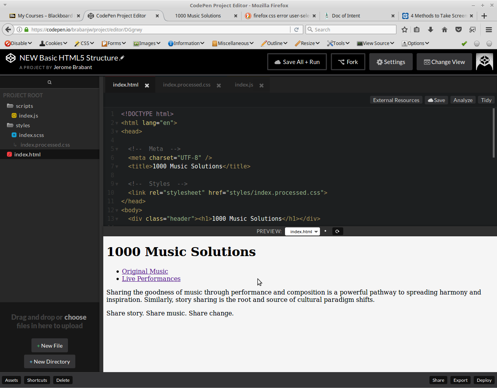

This is tough. Choosing colors displays and stuff to make things move I can do. Choosing content seems to be a bit tougher. I've been working on www.ourladyofthesnow.org and auburnweedsportcatholicchurches.org. I'm particularly proud of the hover function on the images and buttons. Like blackboard you can write html but you don't have control of the style sheets so I had to add style in the html code. Anyway, if you right click and "view source" you'll see.
I've been getting into taking apart other people's websites. A useful tool has been the "inspect" feature in Chrome
I used Chromes inspect tool to do some fine tuning styling to this page. Check out my screenshot

It seems like rounded corners are in. I did this with the border-radius.
Can my project be just the documentation of my HTML5 CSS3 Javascript Journey? I'm still working on these buttons though
Its funny I've been struggling to get a github account set up and it appears in the chapter 9. You have to load your repository as "username.github.io" which lets you have the free website. I thought it was really confusing. Anyway here's my unfinished website.
I've been dabbling with wordpress a bit and I might end up loading my blog on there (which is a bunch of emptiness)
update October 27th, 2017
Discovered codePen.io. I haven't really worked on it yet. But from what I understand you can code html, css and javascript all within a webpage and it can update and run on the right. I'm not sure what it's like to download your work as to whether they make it difficult so you pay for one of the pro services. Looks like they make templates that start with them all tied together to save you from linking the documents. I'm not sure if they pass validation yet.
Update from November 12th, 2017
I probably should have made new posts at the top as this is beginning to get a bit like a blog. I mean who's going to be down here.
Anyway, I've been working with rgba() for my coloring. My mozilla firefox is able to pul the color through the inspect feature in hex
and I've been using Hex 2 RGBA to convert so I can also controll the opacity (the
If you're looking at the CSS (it may be the middle column) codepen code, it appears they're using SASS or SCSS which I believe is a little different than CSS. If you go to the top it has variables they use so they don't have to repeat themes. This way you can quickly make changes. I only know because at the beginning of the semester I struggled to make sense of SASS through codecademy. If you inspect the elements with you're webrowser you'll be able to get the code required to emulate.
Right Box Content
Using flexboxes to whole screen span.